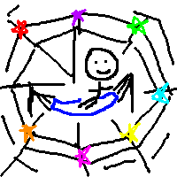

When you are in a web, you have access to a lot of different information at once, and the ability to switch between tasks.
When you’re following a thread, either there is one clear road for you to take or a clear goal you’re trying to reach. You focus your energy on it and block out information that is not relevant.
Ultimately, the way things get done is by following threads. Terry Pratchett uses the metaphor of “following the silver thread” to mean getting done what has to get done.
Building a web is important, but in modern times of connectedness, it’s easy to avoid threads by trying to be centers of webs. I think this is why some people complain that although it seems like the Web, cell phones, etc. should make us more productive, we still feel we aren’t getting too much done. The problem is that although these technologies make it much easier to be in the center of webs, they don’t help us follow threads – somehow that has to come from a deeper source.
To follow threads, we sometimes have to ignore the web. Webs can create a feeling of FOMO (fear of missing out) – feeling that you should be doing a lot of different things, and when that happens, you can’t get anything done (cf. Trefethen’s index cards: a watched to-do list never boils). A similar effect happens when you get too much advice at one time. For me at least, I have a better ability to deal with a problem/goal if it’s the only thing I need to think about at the moment, because I can’t avoid it by trying to deal with another problem/goal.
(Cf. Where are you looking?)
It’s a wonderful feeling, having a thread to follow (my mental picture is that of MarioKart, when you hit those mystery boxes and those arrows on the ground and stay in the middle of the road you just go whoosh whoosh from last place to first place), but what if there isn’t one that’s apparent?
It’s good to know what’s out there before following some thread exclusively – because then you’ll be more sure you picked the right thread, and have enough resources to draw on. Hence, all the advice about exploring a lot of different subjects to find what interests you most. There can be sometimes too much pressure about picking a thread quickly, so it’s fine to spend a lot of time in college, say, just exploring the web of what’s out there. (I think one goal of elementary school should be to build this web: to show students the ways of thinking of a lot of different professions, and why they’re interesting.)
Building a web is like building a foundation. Threads may suddenly pop up in a serendipitous manner (see Life is improv), but they wouldn’t have popped up if you hadn’t built the foundation. As one musician put it, you learn a lot of music theory to build a foundation, but when you’re creating music, you forget about everything that you learned and just create. (reference?)
There are two types of learning: 1. broad (school) learning, for building a foundation, and 1. goal-oriented learning, when you find the tools for a specific project. (Thanks to Semon.) See p. 9 of the Lifelong learning presentation.
There are two types of patience: 1. patience for focused tasks 1. patience for branching out tasks Note (1) is when you know what the problem is (cf. you have a thread) and (2) is when you don’t even know what you’re looking for (ex. what do I really want to work on?) (1) is targeted and (2) is exploration. In (1) the results are faster, more frequent, and less stressful, but may not be as interesting. (Thanks to Meiyi.)
In writing, building a web is like building the world where a story takes place, and following the thread is like writing a story. You engage in research and worldbuilding at the beginning you’re writing a story you have enough material to draw on (harnessing combinatorial creativity).
Web:world :: thread:story
One thing many good books do is following threads (trains) of thought. (One common mistake in creative writing is to jump from one “interesting” event to the next, without following the characters closely. Characters don’t get to pluck the thread of life! I think keeping a diary is a good way to understand what makes up a thread.)
It would be very useful for us to record the threads that led us to solve problems and complete projects (cf. Jacob’s idea of a “curiosity thread,” http://curiositythread.tk/ and hackercasting). One experiment I’m trying out is to type a summary of the math I do everyday, including all the dumb questions I ask myself and false starts in doing problems, because I think you can learn more when you see the thread someone followed (rather than a tidied-up thread with bad parts “snipped out”); cf. Proofs and stories as obstacle avoidance.